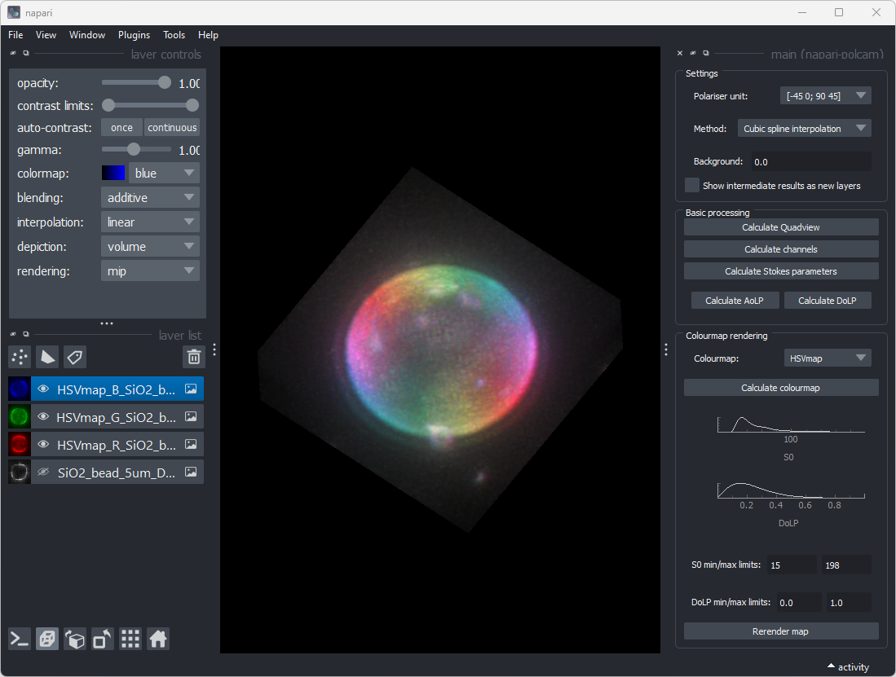

Software: napari-polcam
napari-polcam is a napari plugin for processing and rendering multi-dimensional polarisation camera image data.Download the latest version of the source code here: Download source code
System requirements
- A working installation of napari
- The software has been tested on Mac (macOS Monterey Version 12.6) and Windows (Windows 11 Pro Version 22H2) computers, using Python version 3.9.13 and napari version 0.4.17.
Installation guide
-
Download the latest version of the source code (download source code) and unzip the folder.
-
If napari is not already installed, follow the installation instruction on the napari webiste.
-
Open a terminal in the virtual environment in which napari has been installed.
-
In the terminal, navigate to the folder 'napari-polcam-main' (the folder that contains the file MANIFEST.in, setup.cfg, etc.).
-
In the terminal, write: pip install .
-
If successful, you should now be able to access napari-polcam as a plugin in napari under 'Plugins > main (napari-polcam)'. In the future, we would like to make napari-polcam available from the napari hub.
The typical install time on a standard desktop computer takes a few minutes. If you encounter any issues during installation, please email us at eb758@cam.ac.uk or report an issue on the github repository.
Demo
Using napari-polcam is very straightforward. Load the tif stack by dragging it into the napari gui. Select the dataset in the layer list. In the settings panel in napari-polcam, pick a polariser unit option, an interpolation method (cubic spline interpolation is recommended) and set a background (e.g. the minimum intensity value in the dataset). To convert the dataset to different formats, click any of the buttons in the basic processing panel or colourmap rendering panel. An example of a HSVmap rendering of a test dataset (a z-stack of a silica microsphere coated with a DPPC + 40% cholesterol lipid bilayer, labeled with Nile red):
